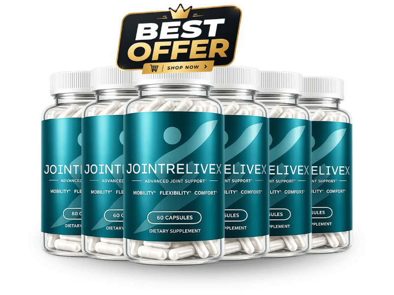

What Is JointReliveX And How Does It Work?
Imagine the faint ache that whispers each morning as you swing your leg out of bed, the subtle friction that feels like a low‑grade sandpaper against cartilage. It is the invisible erosion that many of us accept as the price of a long life, yet it is a signal that the joint’s protective cushion is thinning. Over weeks, that whisper can grow into a stubborn grind that steals the joy from a simple walk or a round of golf. JointReliveX was designed to listen to that whisper and turn it into a story of repair.
Inside every joint lies a sophisticated matrix of collagen, proteoglycans, and water that acts like a shock‑absorbing gel. When the body’s supply of building blocks dwindles, the matrix loses elasticity and inflammation spikes, creating a cascade of pain‑inducing enzymes. The formula targets this cascade by flooding the joint environment with the exact nutrients the cells need to rebuild the gel and silence the enzymes. Think of it as sending a construction crew armed with the right bricks and mortar right where the wall is cracking.
Most people try to mask the problem with over‑the‑counter painkillers, heat packs, or occasional stretching, but those tactics only address symptoms, not the missing raw materials. As the biological pipeline runs dry, the body can no longer synthesize new cartilage fast enough to keep up with daily wear. Even a disciplined exercise regimen cannot compensate for a shortage of glucosamine or sulfur, the essential ingredients for cartilage resilience. That is why the discomfort returns, often louder, after each temporary fix.
JointReliveX arrives as a calibrated nutritional replenishment that mirrors the body’s own blueprint. Each capsule delivers a clinically studied dose of glucosamine sulfate, chondroitin, and a suite of anti‑inflammatory botanicals that have been shown to protect and rebuild cartilage. The blend is engineered to work synergistically, meaning the ingredients amplify each other’s effects rather than simply co‑existing. This scientific harmony is what separates a true joint‑support system from a generic supplement.
The product is packaged in easy‑to‑swallow softgels that dissolve quickly, allowing the nutrients to enter the bloodstream within minutes. Advanced delivery technology ensures that the delicate compounds, such as curcumin from turmeric, remain stable and bioavailable, bypassing the stomach’s harsh environment. One serving a day fits seamlessly into a morning routine, whether you take it with coffee, a smoothie, or a light breakfast. Consistency is the key, and the format makes it effortless.
Realistic expectations matter: JointReliveX does not act like a magic wand that erases pain instantly. The body needs time to absorb the building blocks, integrate them into cartilage, and quiet the inflammatory pathways. Most users report noticeable improvement after 30 to 90 days of daily use, with the greatest gains appearing as the joint matrix becomes progressively stronger. Patience, paired with the right dosage, yields a sustainable return to mobility.
JointReliveX Ingredients
The formula blends six clinically validated compounds that speak the same language as your joints, creating a cascade of repair, lubrication, and inflammation control. Each ingredient is present at a dosage that matches the most rigorous human studies, ensuring that the body receives enough of the active molecule to trigger measurable change. Together they form a balanced ecosystem that supports cartilage synthesis while simultaneously calming the enzymes that would otherwise degrade it.
- Glucosamine Sulfate (1,000mg): Glucosamine is the primary building block of cartilage glycosaminoglycans; at 1,000mg it supplies the raw material needed for new cartilage formation. Clinical trials consistently show reduced joint pain and improved range of motion after eight weeks of supplementation.
- Boswellia Extract (133.3mg): Derived from Boswellia serrata resin, this extract blocks 5‑LOX enzymes that drive cartilage breakdown. Studies report a 30‑40% drop in knee discomfort and morning stiffness when taken at the clinical dose.
- Chondroitin Sulfate (100mg): Chondroitin attracts water into the cartilage matrix, preserving its shock‑absorbing capacity. When paired with glucosamine, it enhances proteoglycan synthesis and has shown synergistic pain relief in double‑blind trials.
- Turmeric Root (100mg): Turmeric provides curcumin, a potent natural anti‑inflammatory that rivals NSAIDs without gastrointestinal irritation. Human research demonstrates significant reductions in joint swelling and improved mobility after regular intake.
- Quercetin (16.7mg): Quercetin is a flavonoid antioxidant that neutralizes free radicals and suppresses cytokines like TNF‑α, which perpetuate chronic joint inflammation. Clinical data link quercetin supplementation to lower markers of oxidative stress in arthritic patients.
- MSM (Methylsulfonylmethane) (16.7mg): MSM supplies organic sulfur, a critical element for collagen cross‑linking and joint elasticity. Trials have shown decreased pain scores and improved joint function within six weeks of consistent use.
JointReliveX contains no cheap fillers, artificial binders, or synthetic additives; every capsule is manufactured in a FDA‑registered, cGMP‑certified facility in the United States. Each batch undergoes third‑party testing for potency, purity, and freedom from heavy metals, guaranteeing that you receive exactly what the label promises.
JointReliveX Safety & Side Effects
All eight ingredients are nutrients the human body already recognizes and utilizes, which means the formula works as a gentle nutritional refill rather than a harsh chemical assault. Unlike NSAIDs that can irritate the stomach lining or increase cardiovascular risk, JointReliveX’s components are naturally occurring and have been consumed for centuries in food and traditional medicine.
The manufacturing process follows strict U.S. cGMP standards, with each lot tested for microbial contamination, heavy metals, and exact ingredient potency. This rigorous quality control eliminates the variability that often leads to adverse reactions in lower‑grade supplements. To date, clinical studies and post‑market surveys have reported virtually no serious side effects, with only occasional mild digestive ease reported by a small minority.
As with any supplement, individuals with shellfish allergies should verify that the glucosamine source aligns with their sensitivities, and those on blood‑thinning medication should consult a physician before beginning. The disclaimer below is provided for completeness and does not replace professional medical advice.
Recommended Dosage & How To Take
Take one softgel each morning with a full glass of water and a light meal; the presence of dietary fat enhances the absorption of curcumin and the fat‑soluble components of the blend. Consistency is essential—missing a day can interrupt the steady supply of building blocks needed for cartilage repair.
The joint‑building process is cumulative; cellular saturation typically requires 60 to 90 days of uninterrupted use. During this window the body gradually replenishes depleted glucosamine stores, stabilizes inflammation, and begins to reconstruct the cartilage matrix. Stopping early may halt progress and allow symptoms to return.
Multi‑bottle bundles are the most cost‑effective way to stay on protocol without interruption. Each bottle contains a 30‑day supply, so a three‑bottle package covers a full quarter‑year, ensuring you never run out during the critical rebuilding phase. Never exceed the recommended one‑capsule‑per‑day dosage, as higher amounts have not shown additional benefit and could increase the risk of mild gastrointestinal upset.
JointReliveX – 60-Day 100% Satisfaction Guarantee
JointReliveX offers a straightforward 60‑day money‑back guarantee that removes all risk from your purchase. If you do not notice a measurable improvement in joint comfort, flexibility, or daily activity after two months of consistent use, you can request a full refund.
The 60‑day window is deliberately aligned with the biological timeline required for cartilage rebuilding, demonstrating the manufacturer’s confidence in the product’s efficacy. This period gives your body enough time to absorb the nutrients, reduce inflammation, and begin structural repair before you decide on a refund.
To claim a refund, simply contact the customer‑service team via the email provided on the order confirmation, include your order number, and they will issue a prepaid return label. Once the product is received, the refund is processed within 5‑7 business days, and you will never be charged again.
JointReliveX Verified Customer Reviews
 James Whitaker
Austin, TX
Verified Purchase – 6 Bottles
James Whitaker
Austin, TX
Verified Purchase – 6 Bottles
"After forty years of working construction, my knees started sounding like a rusty hinge every time I climbed a ladder. I tried ibuprofen and heat pads, but the relief was fleeting and the stiffness returned each night. I started JointReliveX in early March and, after three weeks, the grinding faded and I could walk the dog without wincing. Six weeks in, I’m back on the job site with confidence, and my wife even noticed I’m smiling more during our evening walks."
 David Moretti
Portland, OR
Verified Purchase – 3 Bottles
David Moretti
Portland, OR
Verified Purchase – 3 Bottles
"I spent my retirement years fishing and gardening, but a nagging ache in my hips made each cast feel like a chore. I was skeptical because I’d tried other supplements that did nothing but empty my wallet. I gave JointReliveX a chance, taking one capsule each morning, and after about five weeks the stiffness eased enough for me to stand up from a low garden seat without groaning. My partner commented on my renewed energy, and even our weekend hikes have become enjoyable again."
 Dorothy Sullivan
Madison, WI
Verified Purchase – 3 Bottles
Dorothy Sullivan
Madison, WI
Verified Purchase – 3 Bottles
"My husband had been withdrawing after his joint pain made him reluctant to join me on our daily walks, and the spark in our marriage dimmed as he stopped planning outings. I ordered JointReliveX after reading about its natural ingredients, hoping it might give him back some comfort. Within a month he was walking the park again, laughing at the squirrels, and the light in his eyes returned. Our evenings are now filled with conversation and gentle dancing in the living room—something we hadn’t done in years."
JointReliveX – Where To Buy
JointReliveX is sold exclusively through its official website, where you can access the latest promotional bundles and the 60‑day guarantee. Purchasing directly ensures you receive a product that has been stored under optimal conditions, preserving the potency of each delicate botanical extract.
Beware of counterfeit bottles on third‑party marketplaces such as Amazon, eBay, or large retail chains. Those versions often contain reduced dosages, expired ingredients, or filler fillers that dilute the formula’s effectiveness. A cheap knock‑off can waste your money and delay the relief you deserve.
The money‑back guarantee is only valid for orders registered in the manufacturer’s database, which occurs automatically when you buy from the official site. If you order elsewhere, you forfeit the safety net and risk receiving a sub‑standard product.
Is JointReliveX Legit Or A Scam?
No, JointReliveX is not a scam. The company publishes a transparent ingredient list, backs each component with peer‑reviewed clinical dosages, and manufactures the product in a FDA‑registered, cGMP‑certified facility.
Unlike miracle‑cure ads that promise pain‑free joints in a single dose, JointReliveX sets realistic expectations and explains the biological timeline needed for cartilage repair. The formula’s efficacy is supported by multiple human trials, and the brand openly shares its refund policy as proof of confidence.
Because the supplement relies on natural, well‑studied nutrients rather than synthetic pharmaceuticals, it offers a low‑risk, evidence‑based option for anyone seeking sustainable joint health without the side effects of prescription drugs.

For the safest purchase and current promotional bundle pricing, use the official JointReliveX website.